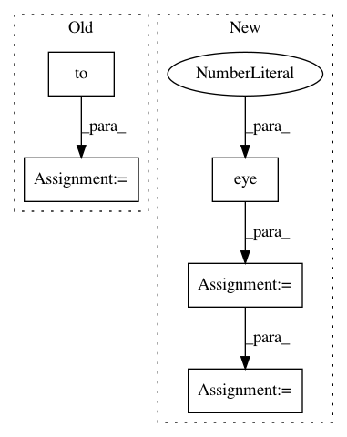

a828315185a9dc8b21ec8e5dbead9044caf0d3a2,test/geometry/test_linalg.py,TestInverseTransformation,test_gradcheck,#TestInverseTransformation#Any#Any#,277
Before Change
@pytest.mark.parametrize("batch_size", [1, 2, 5])
def test_gradcheck(self, device, batch_size):
trans_01 = identity_matrix(batch_size).to(device)
trans_01 = utils.tensor_to_gradcheck_var(trans_01) // to var
assert gradcheck(kornia.inverse_transformation, (trans_01,),
raise_exception=True)
After Change
trans_mat = torch.tensor([[[-1., 0., 512.],
[0., 1., 0.],
[0., 0., 1.]]], device=device, dtype=dtype)
out = kornia.transform_boxes(trans_mat, boxes)
assert_allclose(out, expected, atol=1e-4, rtol=1e-4)
def test_transform_multiple_boxes(self, device, dtype):
In pattern: SUPERPATTERN
Frequency: 3
Non-data size: 5
Instances
Project Name: arraiy/torchgeometry
Commit Name: a828315185a9dc8b21ec8e5dbead9044caf0d3a2
Time: 2020-12-22
Author: sj8716643@126.com
File Name: test/geometry/test_linalg.py
Class Name: TestInverseTransformation
Method Name: test_gradcheck
Project Name: arraiy/torchgeometry
Commit Name: a828315185a9dc8b21ec8e5dbead9044caf0d3a2
Time: 2020-12-22
Author: sj8716643@126.com
File Name: test/geometry/test_conversions.py
Class Name: TestAngleAxisToQuaternion
Method Name: test_smoke_batch
Project Name: arraiy/torchgeometry
Commit Name: a828315185a9dc8b21ec8e5dbead9044caf0d3a2
Time: 2020-12-22
Author: sj8716643@126.com
File Name: test/geometry/test_conversions.py
Class Name: TestRotationMatrixToQuaternion
Method Name: test_smoke_batch